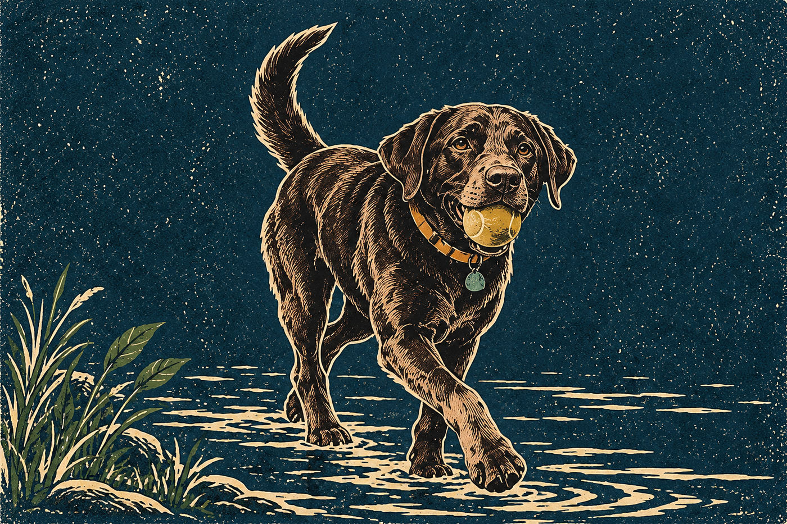

Tuesday's ChoiceFor the weekend of Sat 3 – Sun 4 October
Hillsborough Riverwalk and Gold Park
A short paved out-and-back beside the Eno, starting at Gold Park and turning toward downtown Hillsborough. Set the turnaround by time, then return to the same parking lot.
· Weekend choice 1 of 2

Why This Week
This is a town-adjacent greenway morning, rather than a ridge hike. Saturday is the more sensible weekend option: NWS expects showers mainly after 8 a.m.; Sunday has likely showers and possible afternoon thunderstorms, plus Riverwalk races. Keep the outing short and check conditions before leaving.
Conditions
NWS, updated 2:18 p.m. EDT September 30: Saturday mostly cloudy, high near 75°F, 50% shower chance mainly after 8 a.m.; Sunday high near 68°F, 70% showers with thunderstorms possible after 2 p.m. Saturday morning is a provisional window, not a dry-weather guarantee.
If it turns
Rain, thunder, high water or Town closure signs affect the route: Postpone this river outing. Consider the closer option only after checking its own access and weather; never use it during thunderstorms. Go to: Carolina North Forest
Forecast as of Wed 30 Sep, 14:18 ET
For Rupert
A six-foot leash, drinking water and a short turnaround keep this an easy town walk. The fenced dog park is optional: dogs must be at least six months old, vaccinated with rabies tags, not in heat, and under voice control.
Before You Go
Check Town notices and NWS again. Never cross flood barriers or closure signs. Skip Sunday’s Riverwalk races; shorten or postpone Saturday if rain or conditions deteriorate.
If Plans Change
- CloserCarolina North Forest5–10 min drive
- Bigger dayHanging Rock, Moore's Wall Loop4.2 mi · 1 h 40 – 1 h 55 drive · full day
- AlternativeOcconeechee Mountain, then the Hillsborough Riverwalk2.2 mi · 20–25 min drive
Memory Prompt
One photo at your turnaround.
Sources
- Town of Hillsborough — Riverwalk retrieved 2026-09-30
- Town of Hillsborough — recreation, dog park and severe weather retrieved 2026-09-30
- Town of Hillsborough — Gold Park access retrieved 2026-09-30
- Town of Hillsborough — October 4–6 event impacts retrieved 2026-09-30
- NWS Hillsborough — updated 2:18 p.m. EDT September 30 retrieved 2026-09-30
Place details as recorded Wed 30 Sep. They stay as published even if the place's record is corrected later.